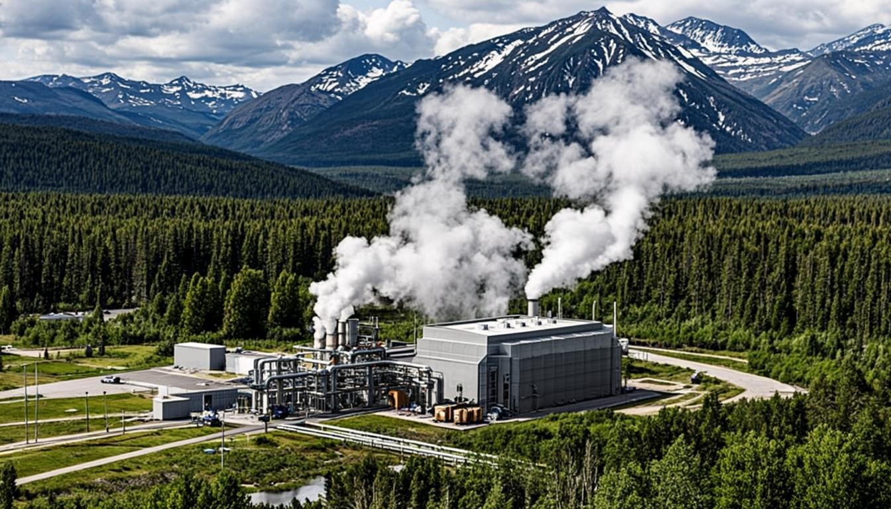
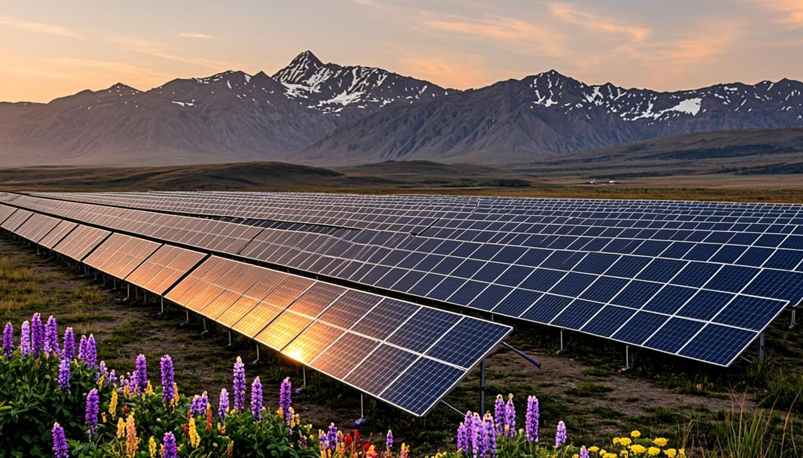
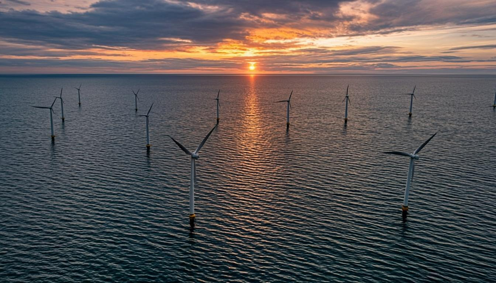
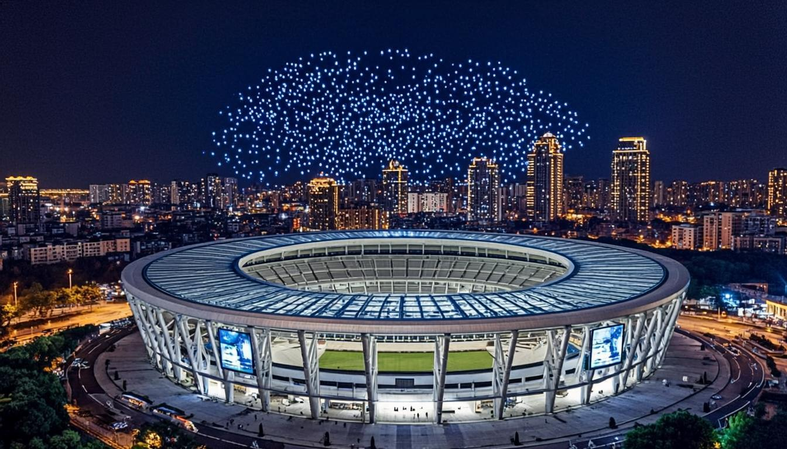

Five flagship visualizations of Cascadia's climate assets (geothermal, solar, wind) and sports infrastructure (analytics warroom, futuristic stadium) — each rendered as a click-to-load inline SVG. The 5 previously-unreferenced env + sports PNGs (totaling 964 KB) are now consumed as lazy-load fallbacks. Users who click before viewport entry never download the PNG bytes. Each scene includes sector-specific animations + hover tooltips + (where relevant) click interactions.
Enhanced Geothermal Systems from Cascadia Subduction Zone
Newberry Volcano pilot · 2,500m wells · 180°C reservoir · 10 MW binary cycle

The Cascadia Subduction Zone — long known as a seismic risk — is also the region's most promising geothermal energy reserve. The Newberry Volcano site in Oregon (US Department of Energy flagship enhanced geothermal systems pilot) demonstrates the pattern: 2,500m wells tap a 180°C reservoir, an ORC binary cycle turbine converts the heat to ~10 MW of baseload renewable electricity, and the system achieves 90%+ uptime. BC's geothermal potential runs along the same volcanic belt (Mt. Meager, Mt. Cayley) and is being explored in partnership with First Nations whose Traditional Territory overlays the resource. Geothermal's killer advantage for Cascadia: baseload renewable — it runs 24/7, complementing the intermittent wind + solar that dominates the regional grid's recent growth.
Eastern Oregon high-irradiance utility-scale solar
580 MW installed · 22% YoY growth · 1,800+ annual sun hours

Eastern Oregon sits in the rain shadow of the Cascade Range — a high-irradiance zone with 1,800+ annual sun hours that makes it the Pacific Northwest's natural home for utility-scale solar. The state has 580 MW installed and growing 22% YoY, driven by falling module costs (now under $0.30/W) and Oregon's Renewable Portfolio Standard targeting 50% renewables by 2040. The Pilot array shows the standard pattern: monocrystalline panels on single-axis trackers, grid-synchronized inverters at 98.5% efficiency, and interconnection at Bonneville Power Administration's 230kV substations. The opportunity: solar pairs naturally with BC's hydro surplus (peak solar hours offset peak draw, freeing hydro for evening ramp) — Cascadia's clean grid is the grid decarbonization template.
Offshore wind at the Columbia River Bar
12-14 MW turbines · 8.5 m/s avg wind · floating platforms · HVDC substation

Columbia River Bar — the most dangerous rivermouth in the Pacific — is also one of the most consistent offshore wind resources on the West Coast. Average wind speeds of 8.5 m/s make floating offshore wind economically viable, and the deep-water approach to the Pacific means mooring systems don't compete with shipping lanes. The pilot array: three 12-14 MW turbines on semi-submersible platforms, interconnect through a single HVDC substation, and export via 230kV submarine cable to shore. The technical promise: offshore wind complements the existing onshore fleet (different wind profile = smoother aggregate output). The opportunity: WA + OR state renewable targets call for 5+ GW of offshore wind by 2035, and Cascadia OS will help site the interconnect.
Cascadia OS live operations dashboard
1,847 tenders ingested 24h · 0.58 avg match · 87 bid drafts · $2.3M pipeline
The Analytics Warroom is the real-time pulse of Cascadia OS. It's where the wedge's three production services — tenders-ingestor (publishes tender.published events), compliance-reasoner (consumes tender.published, runs 3 assessors, publishes compliance.assessment.completed), and bid-drafter (consumes compliance.assessment.completed, drafts bid with provenance footnotes) — converge in a single operational view. Today's snapshot: 1,847 tenders ingested in the last 24 hours (12.3% above 7-day average), average match confidence of 0.58 (above the 0.50 BID threshold), 87 bid drafts queued for human review representing $2.3M of pipeline value. The dashboard is itself hash-anchored to the provenance ledger — every KPI tile carries a clickable provenance trail back to the underlying tender.published event.
Climate-controlled multi-use venue for Cascadia mega-region
70,000 capacity · solar canopy roof · rainwater capture · multi-surface

The Cascadia Futuristic Stadium represents the region's sports infrastructure standard: 70,000 capacity, climate-controlled via solar canopy roof (which also generates ~5 MW year-round), rainwater capture for field irrigation, and multi-surface field for Seahawks / Sounders / concerts. The stadium is a natural host for cross-border mega-events (USA-Canada World Cup 2026, FIFA friendlies, Pacific Northwest sports championships). Cascadia's sports-tech cluster — STATS Perform (Seattle-based sports analytics), Modern Sky Sports (Portland), and the University of Washington's Center for Sports Cardiology — make the stadium an integrated sports-medicine + broadcast + analytics hub. The animated crowd visualization is fed by Cascadia OS's ticket-flow data feed.